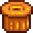
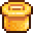
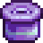

Tools
Tools help you get things done in the world. You can carry them with you in your backpack for ready use, or store them in a chest when not immediately needed.
Upgrades
You can upgrade your tools at the Blacksmith in exchange for gold and metal bars, with upgrades taking two days to complete. During the upgrade, you are still able to buy anything from the shop or ask Clint to break open geodes. Tools must be upgraded in ascending order of materials; for example, a copper tool can't be upgraded directly to iridium.
Tips:
- The practical meaning of an upgrade "taking two days to complete" is that you will wake up on two successive days without your tool. You may use the tool during the day, then take it to the Blacksmith (before it closes) to upgrade. The next day you will be without your tool. The following day, you must travel to the Blacksmith to pick up the tool, and can use it for the remainder of the day.
- When a tool has completed upgrading, a message will appear in the lower left corner of the screen when waking up for the day.
Enchantments
- Main article: Enchantments
A random enchantment can be added to the following tools: Axes, Fishing Poles, Hoes, Pickaxes, Watering Cans, and Pans. This costs one Prismatic Shard and 20 Cinder Shards at the Forge.
Each tool can have only one enchantment at a time, and the applied enchantments are random. However, another enchantment can be applied (at the same price) to replace an existing one. Tools track the previous two enchantments applied to them so they're not reselected when applying a new enchantment.
Upgrading a tool keeps its enchantment.
Enchantments are randomized based on the number of times any tool has been enchanted, so reloading the day and enchanting a different tool will change the progression.
| Name | Axe | Rod | Hoe | Pick | Can | Pan | Effect |
|---|---|---|---|---|---|---|---|
| Auto-Hook | Automatically hooks fish/junk when they bite (which starts the fishing minigame if it hooks a fish). | ||||||
| Archaeologist | For hoe: Double chance of finding artifacts in artifact spots. For pan: 4x chance to find Artifact Troves, 2x chance to find Bone Fragments, 3.5x chance to find artifacts. | ||||||
| Bottomless | Infinite water. | ||||||
| Efficient | No energy drain when used. | ||||||
| Generous | For hoe: 50% chance of double item after digging. For pan: Increases maximum amount of found non-ore items, see Pans for more details. | ||||||
| Fisher | 10% chance of receiving a location-appropriate fish as a panning reward. | ||||||
| Master | Adds an extra fishing level to the player while held. | ||||||
| Powerful | Adds 1 extra power level for pickaxe, 2 for axe. | ||||||
| Preserving | 50% chance that bait and tackle aren't consumed on use. | ||||||
| Reaching | Increased charge-up capacity for greater area of effect. Increases the maximum area of effect to 5x5 tiles. | ||||||
| Shaving | Extra 3 regular wood from Oak, Maple, Pine, and Palm trees. Hardwood from Mahogany trees. Red Mushroom from Mushroom trees. Fiddlehead Fern from Green Rain Tree Type 3. Chance of extra hardwood from stumps. Chance of extra produce from giant crops. | ||||||
| Swift | For hoe: charge speed is 33% faster. For all: default swing speed is 33% faster. |
Proficiency
Proficiency refers to the amount of energy required to use a specific tool.
At skill level 0, each successful use of a Pickaxe, Axe, or Hoe costs 2 energy. Unsuccessful uses (e.g., attempting to chop a Large Log with the starter axe) cost 1 energy. Each cast of the Fishing Pole costs 8 energy, even if the cast fails (e.g., the fishing line does not land in water). The starter Watering Can uses 2 energy.
Each increase in skill decreases energy requirements by 0.1 points for specific tools (listed below). Skill increases past level 10 (only possible temporarily via Buffs) continue to decrease the energy requirements. So, for example, using a Pickaxe at Mining level 13 costs only 0.7 points per swing. (The game keeps track of fractional amounts of energy, but in the user interface they are rounded to the nearest integer.)
Powering up an upgraded Watering Can increases its energy cost by 2 points per power-up; each increase in skill decreases the energy requirement by 0.1 points (regardless of power level). At Farming Level 0, the starter can uses 2 energy to water one tile; the iridium can at maximum power uses 10 energy to water eighteen tiles. At Farming Level 10, the starter can uses 1 energy; the iridium at maximum power uses 9 energy (10 minus 0.1 per skill level). Using an upgraded can to water fewer tiles than it is able costs the same energy as the first watering can upgrade that is able to water that many tiles (single tile always the same as starter can, 5 tiles always the same as steel can). Attempting to use an empty watering can doesn't use energy. Filling a watering can never uses energy.
Upgrading an Axe, Pickaxe, or Hoe does not alter the amount of energy required to use it. The increased power of the Axe and Pickaxe and increased area-of-effect of the Hoe will result in less overall energy used for the same task than a lower-level tool.
Note that all Hoes use the same energy (2 points at Farming Level 0, and 1 point at Farming Level 10), whether powered-up or used to till one tile of soil.
All fishing poles use the same energy: 8 points at Fishing Level 0, and 7 points at Fishing Level 10.
Affected ToolsFarming Foraging Fishing Mining |
Unaffected ToolsThe following tools do not consume energy:
The following tools always consume 4 points of energy: |
Neither loading a Crab Pot with Bait nor harvesting it uses any energy, at any skill level.
Hoes
- Main article: Hoes
Used primarily to till soil for Farming and to dig up Artifact Spots. Upgraded hoes may be used to till more than one square at a time by holding left-click and "powering up" the tool.
| Image | Name | Cost | Ingredients | Improvements |
|---|---|---|---|---|
| Hoe | Starter Tool | N/A | ||
| Copper Hoe | Increases maximum area of effect to 3 tiles in a straight line. | |||
| Steel Hoe | Increases maximum area of effect to 5 tiles in a straight line. | |||
| Gold Hoe | Increases maximum area of effect to a 3x3 area (9 corresponding tiles). | |||
| Iridium Hoe | Increases maximum area of effect to a 6x3 area (18 corresponding tiles). |
Pickaxes
- Main article: Pickaxes
Used mainly for breaking stones and picking up placed equipment or furniture items. It is also used to un-till soil that has been tilled with a Hoe.
Using a pickaxe on a Monster will deal a small portion of damage, similar to weapons.
| Image | Name | Cost | Ingredients | Improvements |
|---|---|---|---|---|
| Pickaxe | Starter Tool | N/A | Can break small rocks anywhere. In the Mines, can break tougher rocks on floors 1-39 in 2 hits and can break large boulders with multiple hits. Can break Copper Nodes in 3 hits. Note: Cannot break boulders on the Farm. | |
| Copper Pickaxe | In the Mines, can break all rocks on floors 1-39 in 1 hit and 40-79 in 2 hits. Can break Copper Nodes in 2 hits. | |||
| Steel Pickaxe | Needed to break boulders on the Farm.
In the Mines, can break rocks on floors 40-79 in 1 hit, and Quarry Mine rocks in 2 hits.
| |||
| Gold Pickaxe | Can break a meteorite.
In the Mines, can break rocks on floors 80-120 in 1 hit. Breaks Copper and Iron Nodes in 1 hit, Gold Nodes in 2 hits, and Iridium Nodes in 4 hits. Can break boulders in the Quarry Mine in 4 hits. | |||
| Iridium Pickaxe |
Can break rocks in the Quarry Mine and Skull Cavern in 1 hit. Breaks Diamond Nodes in 2 hits and all other gem nodes in 1 hit. Can break boulders in the Quarry Mine in 3 hits. |
Axes
- Main article: Axes
Used to chop down Trees for wood and sap and to gather Hardwood from a Large Stump or a Large Log. The axe must also be used to harvest Giant Crops. Like the pickaxe, it can deal a small amount of damage to monsters.
| Image | Name | Cost | Ingredients | Improvements |
|---|---|---|---|---|
| Axe | Starter Tool | N/A | 10 hits to chop a fully-grown tree, and 5 hits for a small stump. | |
| Copper Axe | Can chop Large Stumps. 8 hits to chop a fully-grown tree, and 4 hits for a small stump. | |||
| Steel Axe | Can chop Large Logs. 6 hits to chop a fully-grown tree, and 3 hits for a small stump. 3 hits for a stage 4 tree, and 2 hits for a stage 3 tree and below. | |||
| Gold Axe | 4 hits to chop a fully-grown tree, and 2 hits for a small stump. 2 hits for a stage 4 tree, and one hit for a stage 3 tree and below. | |||
| Iridium Axe | 2 hits to chop a fully-grown tree, and 1 hit for a small stump. 1 hit for a stage 4 tree and below. |
Watering Cans
- Main article: Watering Cans
Used to water crops. A crop plant does not grow on a day it is not watered. If it is raining, the rain waters all crops without use of the watering can.
Upgraded watering cans may be used to water more than one square at a time by holding left-click and "powering up" the tool.
| Image | Name | Cost | Ingredients | Improvements |
|---|---|---|---|---|
| Watering Can | Starter Tool | N/A | Has a total water capacity of 40 charges before it has to be refilled. | |
| Copper Watering Can | Capacity increased to 55 charges.
Increases maximum area of effect to 3 tiles in a straight line. | |||
| Steel Watering Can | Capacity increased to 70 charges.
Increases maximum area of effect to 5 tiles in a straight line. | |||
| Gold Watering Can | Capacity increased to 85 charges.
Increases maximum area of effect to a 3x3 area (9 corresponding tiles). | |||
| Iridium Watering Can | Capacity increased to 100 charges.
Increases maximum area of effect to a 6x3 area (18 corresponding tiles). |
Trash Cans
- Main article: Trash Cans
Used to delete items from the Inventory.
Upgraded trash cans will return some gold for trashed items.
| Image | Name | Cost | Ingredients | Improvements |
|---|---|---|---|---|
| Trash Can | Starter Tool | N/A | Used to delete items from the inventory menu. | |
 |
Copper Trash Can | When deleting items, reclaim 15% of their monetary value. | ||
| Steel Trash Can | When deleting items, reclaim 30% of their monetary value. | |||
 |
Gold Trash Can | When deleting items, reclaim 45% of their monetary value. | ||
 |
Iridium Trash Can | When deleting items, reclaim 60% of their monetary value. |
Fishing Poles
- Main article: Fishing
Used to catch fish. Hold down left click to power-up the cast, use WASD or the arrow keys to slightly adjust the placement of the hook.
| Image | Name | Cost | Improvements | Location | Requirements |
|---|---|---|---|---|---|
| Training Rod | Easier to use (only catches common Fish). | Buy from Willy's Fish Shop | |||
| Bamboo Pole | Given to the player by Willy Buy from Willy's Fish Shop |
||||
| Fiberglass Rod | Able to use bait. | Buy from Willy's Fish Shop | (The player receives a letter the day after it becomes available) | ||
| Iridium Rod | Able to use bait & tackle. | Buy from Willy's Fish Shop | (The player receives a letter the day after it becomes available) | ||
| Advanced Iridium Rod | Able to use bait & 2 tackles. | Mastery Cave Buy from Willy's Fish Shop |
Claiming |
Pans
- Main article: Pans
Used as a tool to gather ore (and other items) from shimmering lights that randomly appear in water.
| Image | Name | Cost | Ingredients | Improvements |
|---|---|---|---|---|
| Copper Pan | N/A | Can find 3 to 9 ores and up to 1 special item from panning. | ||
| Steel Pan | Can find 4 to 10 ores and up to 2 special items from panning. Has a small chance to spawn another panning spot. | |||
| Gold Pan | Can find 5 to 11 ores and up to 3 special items from panning. Slightly higher chance to spawn another panning spot. | |||
| Iridium Pan | Can find 6 to 12 ores and up to 4 special items from panning. Has a high chance to spawn another panning spot. |
Other Tools
| Image | Name | Cost | Description | Location |
|---|---|---|---|---|
| none | Backpack (12 slots) | Starter Tool | Use to carry your inventory. | You start with one. It can hold 12 stacks of items, but it can be upgraded. |
| Large Pack (24 slots) | Unlocks the 2nd row of inventory (12 more slots). | Purchased from Pierre's General Store at the start of the game. | ||
| Deluxe Pack (36 slots) | Unlocks the 3rd row of inventory (12 more slots). | Purchased from Pierre's General Store after buying 24 Size Backpack. | ||
| Scythe | Starter Tool | It can cut grass into hay, if you've built a silo. | You start with one. | |
| Golden Scythe | N/A | It's more powerful than a normal scythe. | Found at end of Quarry Mine. | |
| Iridium Scythe | N/A | Can be used to harvest any crops. It's also excellent at gathering hay. | Obtaining | |
| Milk Pail | Gather milk from your animals. | Purchased from Marnie's Ranch. | ||
| Shears | Use this to collect wool from sheep. | Purchased from Marnie's Ranch. | ||
| Heater | Keeps your animals warmer and happier during the winter. | Purchased from Marnie's Ranch. It is the reward for completing the | ||
| Auto-Grabber | Automatically harvests from your animals each morning. Must be placed inside a coop or barn. | Unlocked after reaching Farming Level 10, the player will receive a letter in the mail from Marnie. | ||
| Auto-Petter | Joja Co. patented technology for coops and barns. Keeps your animals content, but can't replace the full benefit of human touch. Hand-petting can be provided to supplement. | Purchased from JojaMart. Rare reward from the Skull Cavern. |
Tool Disposal
Most tools cannot be put in the trash can on the player's inventory screen, or dragged off the inventory screen to be dropped. Tools that can be trashed and/or dropped are: all Fishing Poles, the Auto-Grabber, Heater, and Pans.
If the player somehow loses the Scythe, Axe, Pickaxe, or Watering Can (by dying in the Mines for example), the next day a basic version of the tool will appear next to the player's bed, in the player's refrigerator (if the player has a kitchen), or in the Lost and Found box in the Mayor's Manor. Mayor Lewis may send a letter in the mail saying he found them and returned them.
Bugs
- In multiplayer, it is possible to lose a tool in the Mines, and never get a replacement back. A known workaround for this bug is to have one of the non-hosting players create a new character, have them drop their tools into a chest, and then quit and re-join as their original character.
- When swinging a pickaxe, axe, or a hoe at one of the cactuses in the Calico Desert, the tool disappears from the animation.
- If the player triggers a fishing rod away from a fishing spot, it may freeze the player in place. This disables all menus and the game cannot be saved or exited without force.
- On PC, if the player presses Right Shift + R + Delete during an animation, this will cancel the animation. This can be used to chop trees, break rocks, etc. faster.
History
- 1.4: Tools upgraded from Clint will now tell you when they're ready.
- 1.5: Added Enchantments.
- 1.6: Added all new types of pans as upgrades to the Copper Pan.
- 1.6.3: Clint's Shop and geode service will now remain available while a tool is being upgraded.
| Tools | |
|---|---|
| Basic | Axes • Golden Scythe • Iridium Scythe • Hoes • Pans • Pickaxes • Scythe • Trash Cans • Watering Cans |
| Fishing | Training Rod • Bamboo Pole • Fiberglass Rod • Iridium Rod • Advanced Iridium Rod • Crab Pot |
| Other | Auto-Grabber • Auto-Petter • Hay Hopper • Heater • Incubator • Milk Pail • Ostrich Incubator • Shears |